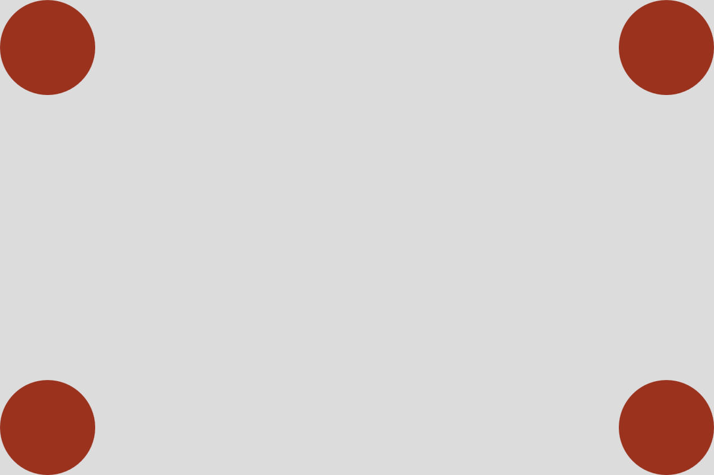
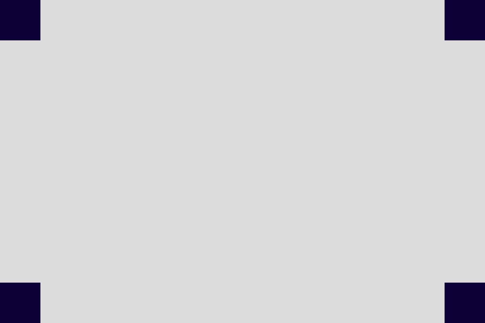

Premiers pas
Découvrir p5.js et l'éditeur en ligne.
L'éditeur en ligne
Tout se passe dans le navigateur, pas d'installation. → editor.p5js.org
- éditeur de code à gauche
- aperçu en direct à droite
- console en bas pour les erreurs

L'éditeur en ligne p5.js
Créez un compte pour sauvegarder votre travail.
Raccourcis : Cmd/Ctrl + Enter pour lancer, Cmd/Ctrl + / pour commenter, Cmd/Ctrl + S pour sauvegarder.
function setup() {
createCanvas(400, 400);
}
function draw() {
background(220);
circle(200, 200, 100); // <---- ajoutez cette ligne
}setup et draw
function setup() {
// UNE FOIS, au démarrage
}
function draw() {
// EN BOUCLE, environ 60 fois par seconde
}Testez ces deux versions l'une après l'autre.
// version A ; background dans draw
function setup() {
createCanvas(400, 400);
}
function draw() {
background(220);
circle(200, 200, 100);
}// version B ; background dans setup
function setup() {
createCanvas(400, 400);
background(220);
}
function draw() {
circle(200, 200, 100);
}Remplacez circle(200, 200, 100) par circle(mouseX, mouseY, 100) et comparez A et B à nouveau.
Le repère
// (0,0) ──────────────→ x
// │
// │ · (300, 200)
// │
// ↓ ywidth et height
width et height contiennent les dimensions du canvas.
function setup() {
createCanvas(600, 400);
}
function draw() {
background(220);
circle(width / 2, height / 2, 100); // toujours au centre
}Testez de changer le format dans createCanvas().
Les formes de base
circle(x, y, d)cercle ; centre + diamètrerect(x, y, w, h)rectangle ; coin supérieur gauche + dimensionsline(x1, y1, x2, y2)segment entre deux pointstriangle(x1, y1, x2, y2, x3, y3)trois sommetsAttention aux points d'ancrage !
Appeler une fonction
background(220); // un seul paramètre
circle(300, 200, 80);
// └─┬─┘ └┬┘ └┬┘
// x y diamètre
noFill(); // aucun paramètre, mais les parenthèses restent obligatoiresL'ordre n'est pas modifiable et ne se devine pas toujours. Il est écrit dans la documentation de p5.js.
Ouvrez la page de rect() dans la référence. Trois sections :
La description
Le fonctionnement et l'utilisation de la fonction expliqués, avec des mots.
Les exemples
Souvent exécutables directement dans la page
La syntaxe
Les noms des paramètres, dans l'ordre. Certains sont optionnels.
La liste des paramètres/p>
Ce que chacun signifie, et lesquels sont optionnels.
« quels sont les paramètres de … ? » → la documentation de p5.js.
- Un cercle dans chaque coin du canvas, tangent aux bords
- Puis la même chose avec des carrés
- Bonus : Ajoutez une marge
→ 5 minutes
Utilisez width et height


Remplissage et contour
fill(255, 0, 0); // couleur de remplissage (R, V, B de 0 à 255)
fill(128); // une seule valeur (niveau de gris)
fill('turquoise'); // couleur nommée
fill('#c35272'); // hexadécimal
stroke(0); // contour noir
strokeWeight(4); // épaisseur du trait
noFill(); // pas de remplissage
noStroke(); // pas de contourfill() (ou stroke()) n'est pas un paramètre de la forme, c'est la « couleur de votre crayon ». Toutes les formes suivantes auront cette couleur.
fill(255, 0, 0);
circle(150, 200, 100);
circle(300, 200, 100); // rouge aussiL'ordre de dessin
background(240);
fill(255, 0, 0);
circle(200, 200, 200); // dessiné en premier
fill(0, 0, 255);
circle(200, 200, 100); // dessiné après (dessus)Exercice
- Reproduisez la composition ci-dessous
- Canvas 600 × 400
- Vous aurez besoin (en plus
createCanvas()etbackground()) de, au minimum : - Sauvegardez votre sketch